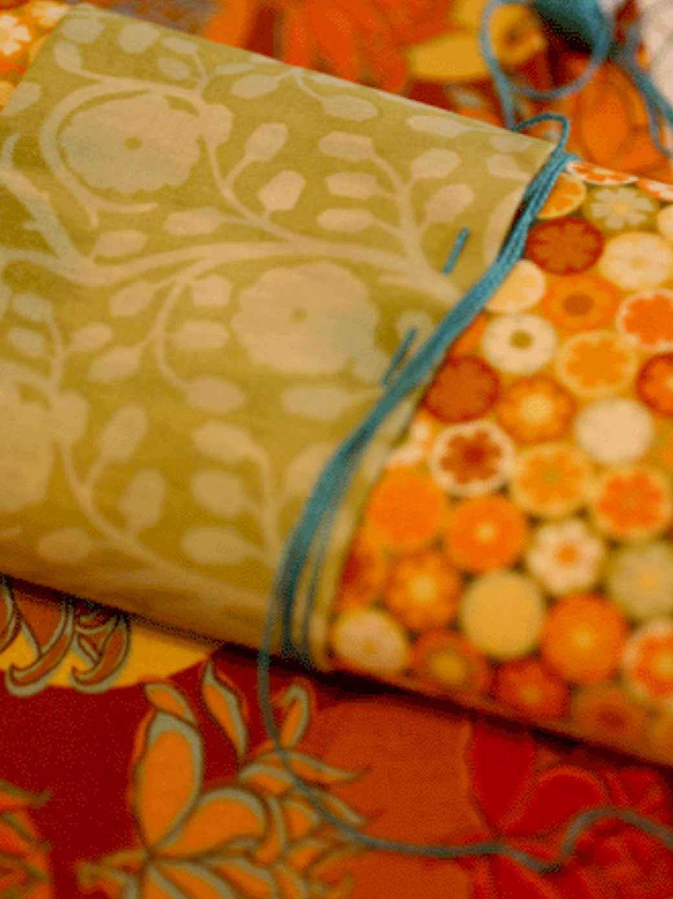

Boutique+
Portfolio
Home
Editorial
Fine Art
Textile
About
Contact

Watercolor Paintings
Coastal Abstracts
An improvisatory approach in distilling natural forms to the bare essentials—emphasizing only their symbolic presence.
This series of abstract paintings has been inspired by the San Francisco seaside.
Alcove In Setting Sun
View in more detail
Fog-Blanched Sea
View in more detail
Seafoam At Dawn
View in more detail
Sand Kissed By Moonlight
View in more detail
View More
Figure Drawings
Mixed Media
Poem Pictographics